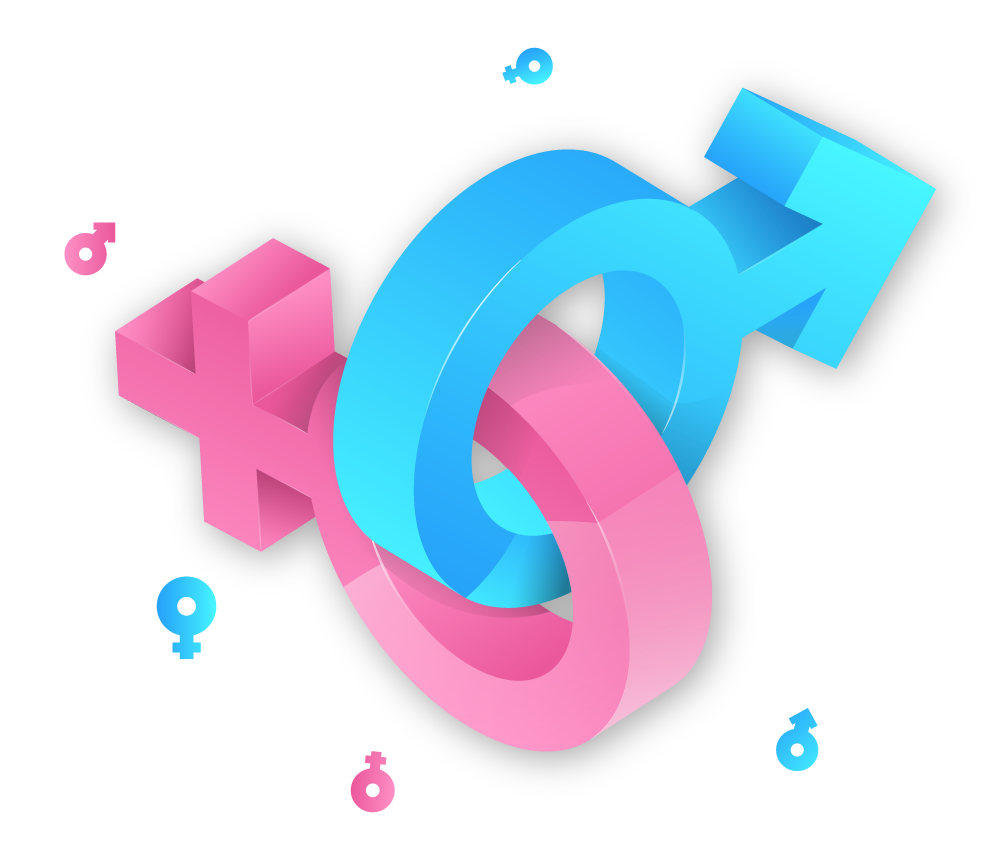

Protocolo, Comité de Prevención y Atención, y Oficina de Género de DEV.F
En DEV.F queremos un espacio libre de Violencia de Género, te invitamos a consultar el Protocolo de Género de DEV.F y en lo particular el Violentómetro para que te informes sobre qué constituyen actos de violencia de Género.
